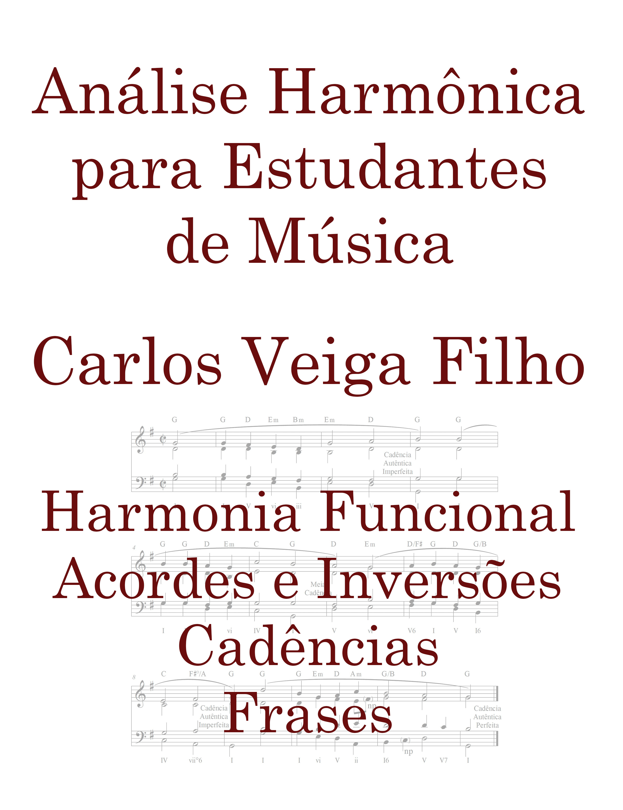

Leia e reconheça
Leitura nas claves de sol e fá, reconhecimento dos acordes e sua representação por cifras.
Da leitura musical à análise harmônica
Análise Harmônica para Estudantes de Música
Um caminho progressivo para compreender como a música funciona: leia, ouça os exemplos e pratique a análise com exercícios.
Carlos Veiga Filho · Edições impressa e digital

O que você vai estudar
Pensado para estudantes de música, especialmente nos primeiros semestres da universidade, o livro apoia o estudo de LEM e Harmonia. As explicações conectam a leitura musical à compreensão dos acordes, das cadências e das frases.
Leitura nas claves de sol e fá, reconhecimento dos acordes e sua representação por cifras.
Harmonia funcional, acordes e inversões, com atenção às notas melódicas no contexto musical.
Reconhecimento de cadências e frases para relacionar os elementos estudados à organização musical.
Conheça antes de comprar
Leia gratuitamente os capítulos abaixo. No final dos capítulos, os links e QR codes levam aos materiais complementares: exemplos para escutar e exercícios para imprimir.
Amostra gratuita em português · PDF
Ler amostraAmostra gratuita em português · PDF
Ler amostraAmostra gratuita em português · PDF
Ler amostraEscolha como estudar
Prefere folhear e anotar no papel ou levar a leitura em formato digital? Escolha a edição que combina com sua rotina.
Edição em português
Para ter o livro na mesa de estudos e acompanhar cada explicação no papel.
Comprar impresso na Amazon ↗Edição em português
Para consultar o conteúdo em formato digital e incluir o estudo na sua rotina.
Comprar e-book na Amazon ↗Consulte o preço atual, a disponibilidade e as condições de entrega na Amazon. Para consultar a compra do impresso diretamente com o autor, escreva para carlos5veiga@gmail.com.
O livro nas mãos de quem estuda
Registros compartilhados na divulgação do livro.
Antes de escolher
Para estudantes de música que querem compreender melhor a harmonia, com atenção às disciplinas básicas dos primeiros semestres universitários. O percurso começa pela leitura nas claves de sol e fá.
Sim. Os capítulos 1, 2, 3, 7, 8 e 16 estão disponíveis gratuitamente na seção Leia uma amostra.
Use os links e QR codes indicados nos capítulos para acessar os exemplos sonoros e os exercícios para impressão.
Na página da edição escolhida na Amazon. Os valores e as condições de entrega são apresentados pela loja antes da compra.